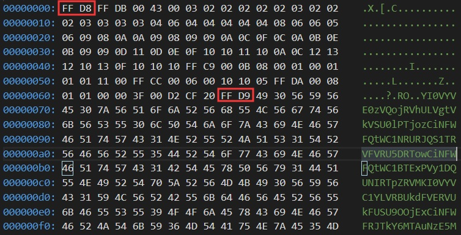

起因
前几天群友在群里分享了一篇文章用图床看视频是什么体验，今天腾出来时间研究原理并实现一下。
分析
按照作者博客所说的，是直接将视频分段之后拼接在图片之后，播放时跳过前面图片部分即可。为什么不直接修改文件拓展名呢？作者提到图床站会检查文件头，如果不是图片的文件头人家是不收的，因此要在前面拼接一张小图来应付检查。
从作者的博客中拿出关键代码如下：
<video id="video" data-url="https://img11.360buyimg.com/img/jfs/t1/89319/11/12602/4783/5e4947e9Ee1c0bc66/f212833e4c8c8194.jpg" src="blob:https://i-meto.com/2edacb21-e054-41da-b699-e549416f93d3"></video>
<script src="https://cdn.jsdelivr.net/npm/plyr@latest/dist/plyr.min.js"></script>
<script src="https://cdn.jsdelivr.net/npm/hls.js@latest"></script>
<script src="https://cdn.jsdelivr.net/npm/hlsjs-upimg-wrapper@latest"></script>
<script>
if (Hls.isSupported()) {
const video = document.getElementById("video")
const player = new Plyr(video)
const wrapper = new HlsjsUpimgWrapper(Hls)
const hls = wrapper.createPlayer({}, {
offset: 107
})
hls.loadSource(video.dataset.url)
hls.attachMedia(video)
}
</script>从代码中可以看出偏移量为107，即图片部分为107字节，采用HLS技术，那么第一个请求的就应该是M3U8文件，里面包含了后续各段视频的地址，把video标签中data-url指向的图片拿到看看。

JPEG图像有一个很明显的特征，就是以FF D8开始，以FF D9结束，那么FF D9之后的字节不出意外就是M3U8文件。这里可以看出M3U8文件用过BASE64编码了，把它拿出来解码看看。
#EXTM3U
#EXT-X-VERSION:3
#EXT-X-MEDIA-SEQUENCE:0
#EXT-X-ALLOW-CACHE:YES
#EXT-X-TARGETDURATION:11
#EXTINF:10.719044,
https://img11.360buyimg.com/img/jfs/t1/108612/15/6116/4263383/5e4947d2Ea258c94c/39f32d86dea1b392.jpg
......省略若干行......
#EXTINF:5.338667,
https://ask.qcloudimg.com/draft/1134330/q492o838cn.jpg
#EXTINF:5.130133,
https://ask.qcloudimg.com/draft/1134330/u0wg2wg9j4.jpg
#EXTINF:10.051711,
https://ask.qcloudimg.com/draft/1134330/r0ds1qugew.jpg
#EXT-X-ENDLIST这就是解码之后的M3U8文件，里面指向了各分段视频的地址（实际上是图片+视频的混合），随机从里面下载一张“图片”，去掉头，把ts文件提取出来。
with open('../data/dc30b8f2388a876a.jpg', 'rb') as f:
data = f.read()
jpg, ts = data[:107], data[107:]
"""
jpg 值为
b'\xff\xd8\xff\xdb\x00C\x00\x03\x02\x02\x02\x02\x02\x03\x02\x02\x02\x03\x03\x03\x03\x04\x06\x04\x04\x04\x04\x04\x08\x06\x06\x05\x06\t\x08\n\n\t\x08\t\t\n\x0c\x0f\x0c\n\x0b\x0e\x0b\t\t\r\x11\r\x0e\x0f\x10\x10\x11\x10\n\x0c\x12\x13\x12\x10\x13\x0f\x10\x10\x10\xff\xc9\x00\x0b\x08\x00\x01\x00\x01\x01\x01\x11\x00\xff\xcc\x00\x06\x00\x10\x10\x05\xff\xda\x00\x08\x01\x01\x00\x00?\x00\xd2\xcf \xff\xd9'
"""
with open('dc30b8f2388a876a.ts', 'wb') as f:
f.write(ts)经过测试ts文件是可以正常播放的，至此分析过程结束。
实现过程
首先用FFmpeg把MP4转换成HLS，命令为：ffmpeg -i source.mp4 -codec:v libx264 -codec:a mp3 -map 0 -f ssegment -segment_format mpegts -segment_list playlist.m3u8 -segment_time 10 out%03d.ts
之后将上面jpg的值和各ts段的值拼接。
def process_segment(self):
head = read_bytes('./head.bin') # head即为上面的jpg值
self.done_segments = []
for segment in self.segments: # segment即为各ts的byte数组
self.done_segments.append(head + segment) # 拼接之后完成M3U8的构造。
def process_net_m3u8(m3u8, net_path):
lines = m3u8.splitlines()
num = len(lines)
cur, cnt = 0, 0
while cur < num:
if '#EXTINF' in lines[cur]:
cur += 1
lines[cur] = net_path[cnt]
cnt += 1
else:
cur += 1
m3u8_file = '\r\n'.join(lines)
head = read_bytes('./head.bin')
done = base64.b64encode(m3u8_file.encode('utf-8'))
return head + done主要的程序已经编写完毕，一开始将图片上传到SM.MS，发现下载实在是太慢了，5M要下载1min还多，而5M的视频才8秒左右，这是无法容忍的，干脆弄到GitHub上展示一下效果算了。
结束
既然原作者不愿意开源，要尊重原作者的想法和创意，那我也不贴代码了，哈哈哈哈哈。
顺便我要是有Choco那样的老师，我tm上课上到爆！！！